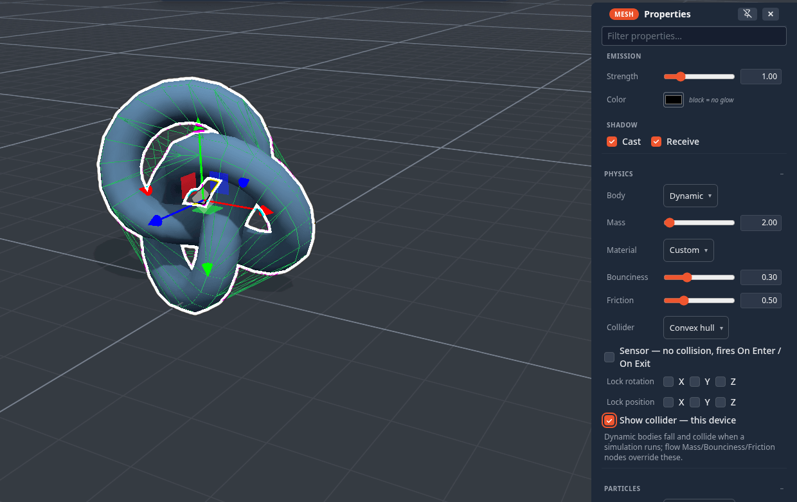

Colliders
Physics never collides your triangles. It collides a simple stand-in — a collider — that is fast to test and forgiving: a box, a sphere, a capsule, a convex skin, or a handful of convex pieces you build yourself. Picking the right one is the difference between a ball that rolls and a ball that slides like a crate. This page covers every collider setting; for running a simulation, gravity, joints and grabbing see Physics & Simulation.
Where the settings are
Select an object and open Properties ▸ Physics:

| Row | Options / range | Default |
|---|---|---|
| Body | Auto (scenery) · Static · Dynamic | Auto (scenery) |
| Mass (Dynamic only) | 0.1 – 100 kg | 1 |
| Material | Custom · Ice · Rubber · Wood · Metal | Custom |
| Bounciness | 0 – 1 | 0.3 |
| Friction | 0 – 2 | 0.5 |
| Collider | Box · Sphere · Capsule · Cylinder · Cone · Convex hull · Custom (edit…) | inferred from the shape (below) |
| Sensor | no collision, fires On Enter / On Exit | off |
| Lock rotation (Dynamic only) | X · Y · Z | off |
| Lock position (Dynamic only) | X · Y · Z | off |
| Show collider — this device | draws the collider as a wireframe | off |
With several objects selected, every change applies to all of them as one undo step. Everything here replicates and saves with the scene — except Show collider, which is only for you.
Body: Auto (scenery) and Static never move — things land on them and bounce off them. Dynamic falls and collides. An Auto or Static object that the flow graph animates (a Path Patrol platform, a Spin paddle) becomes a moving platform automatically: it pushes dynamic bodies, and a player standing on it is carried along.
Collider shapes
| Shape | Best for |
|---|---|
| Box | crates, walls, floors, anything boxy — the fastest, and the fallback for everything |
| Sphere | balls; they roll |
| Capsule | characters and posts — rounded ends slide off edges instead of catching |
| Cylinder | barrels, columns, wheels |
| Cone | cones and spikes |
| Convex hull | irregular shapes: a skin shrink-wrapped around the mesh. Exact for ramps, gems and rocks; it seals over any opening (a bowl becomes a lump) |
| Custom | anything concave — an L-shape, a frame, a chair: several convex pieces you build (below) |
Primitive colliders are sized from the object's own extents and follow its rotation — a tilted box collides as a tilted box, a rotated ramp is really a ramp.
The default is inferred from the object, so most objects need no choice at all:
| Object | Default collider |
|---|---|
| Sphere · Cylinder · Capsule · Cone | the matching shape |
| Torus, Torus knot, the polyhedra, Lathe, Tube, Wedge, Stairs, Arch, Corner | Convex hull |
| everything else (cubes, imported models, groups) | Box |
Limits. A convex hull works on a single mesh of up to 5000 vertices; a denser mesh — and any group — falls back to a box. When a collider looks wrong, turn on Show collider first: a fallback box is nearly always the answer.
Materials: bounciness and friction
Material sets bounciness and friction together, so you pick a feel instead of two numbers:
| Material | Friction | Bounciness | Feels like |
|---|---|---|---|
| Ice | 0.02 | 0.05 | slides forever, dead on landing |
| Rubber | 0.9 | 0.85 | grippy and bouncy |
| Wood | 0.55 | 0.25 | the everyday default feel |
| Metal | 0.3 | 0.1 | slick and heavy |
Move either slider afterwards and the dropdown reads Custom. Configure Scene ▸ Physics ▸ Defaults (advanced) ▸ Material sets the material of every object that does not set its own — the fastest way to make a whole scene icy.
Sensors: trigger volumes
Tick Sensor and the object stops colliding: things pass straight through it — players included. Instead, every overlap fires On Enter when something comes in and On Exit when it leaves, once per entry, on every peer. Use it for a doorway that opens as you approach, a lava pit, a scoring zone, a checkpoint, a finish line.
A sensor is still a visible mesh, so give it a transparent material (or hide it) once it works. With Show collider on, a sensor draws amber instead of green.
Locking axes
A Dynamic body can be pinned per axis:
- Lock rotation X / Y / Z stops it tipping — a character capsule that must stay upright, a spinning top that only turns around Y.
- Lock position X / Y / Z keeps it on rails — a lift that only goes up and down, a puck that stays on the table.
Gravity and damping
Gravity is a scene setting: Configure Scene ▸ Physics ▸ World ▸ Gravity, from −20 to 5 (positive falls up), shared by every object. There is no per-object gravity scale; to make one object float, lock its Y position, give it a lighter material, or push it with an Impulse or Set Velocity node.
Drag and spin drag (linear and angular damping) and Continuous collision are scene-wide too, under Defaults (advanced). A body thrown or knocked faster than about 5 m/s switches continuous collision on for itself until it settles, so a hard throw does not pass through a thin wall.
Seeing the collider
Show collider — this device draws the collision shape as a wireframe over the object: green for a solid collider, amber for a sensor. It is local to you — peers do not see your debug wireframes — and it is hidden in the Wireframe render mode and in Interact and Play. Configure Scene ▸ View ▸ Show colliders shows every object's at once, and draws the ground plane as a translucent sheet.
Turn it on when something rests oddly, hovers above the floor or falls through it.
Custom compound colliders
For a shape no single convex piece can represent, pick Collider ▸ Custom (edit…) — later, Edit collider… re-opens it. The mesh editor opens on a stand-in copy of the object, where you build the collision shape with the ordinary mesh tools.
- Each separate piece becomes its own convex hull, so an L-shape is two boxes, a hollow frame four, a chair five or six.
- The Collider section of the toolbox has add box and add sphere buttons to drop a primitive piece straight in; the status bar shows how many shells (pieces) you have.
- ✓ stores it; ✕ or Esc cancels — the visible mesh is never touched either way.
- A custom collider holds up to about 400 vertices in all; a larger one is refused with a toast. Mass is shared evenly between its pieces.
Keep it rough
A collider only has to be right where things touch. Three boxes that cover a sofa's seat, back and arms collide better — and faster — than a hull of every cushion.
Changing colliders while it runs
Collider settings apply live: change a shape, a material, a sensor flag, a locked axis or the mass while a simulation is running and the body is rebuilt in place — joints, velocity and momentum survive — so you can tune a contraption without restarting it. The one exception is Body: switching between Auto, Static and Dynamic takes effect the next time the simulation starts.
From the flow graph
The Collider node overrides the shape (and can make it a sensor, scale it, or borrow another object's geometry); Mass, Bounciness and Friction override those rows. A node wired to an object wins over its Properties settings. A wired Mass node also makes its object dynamic.
Doors and other moving pack items
The functional pack items — doors, gates, lids, trapdoors — come with colliders that do the right thing on their own. A
door's frame becomes solid slabs with the doorway left open, and the moving leaf follows its animation while a
simulation runs, so you can walk through an open door and not through a shut one. (Pack authors: this is the item's
collider: 'follow' behaviour, the default for a door — see Packs.)